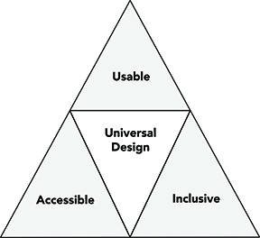

How to Implement Universal Design
Creating a universally accessible web is a journey that starts with understanding and empathy. This guide provides you with key steps to implement universal design in your web projects.
Accessibility Basics
Begin by structuring your HTML to support accessibility. Use semantic elements to describe the purpose of content clearly. Implement ARIA (Accessible Rich Internet Applications) roles to enhance user experience for assistive technologies. Test your site for keyboard-only navigation to ensure all interactive elements are accessible.
Responsive Design
Ensure your website adapts to different screen sizes and orientations. Use responsive design techniques, like flexible grid layouts, responsive images, and media queries, to provide a seamless experience on desktops, tablets, and smartphones.

User-Friendly Navigation
Navigation is key to a good user experience. Make your website’s navigation intuitive and consistent. Use clear labels, logical page hierarchy, and easily clickable links and buttons. Consider the placement of navigation elements to be accessible for touch and mouse interactions.
Testing and Tools
Utilize various tools to evaluate and enhance the accessibility of your website. Tools like WAVE (Web Accessibility Evaluation Tool), AXE, and Lighthouse can help identify issues. Conduct user testing, including people with disabilities, to gain valuable feedback on the usability of your site.
Ongoing Process
Universal design is an evolving process. Stay updated with the latest accessibility guidelines and web technologies. Regularly review and update your website, incorporating feedback and new ideas to ensure it remains inclusive for all users.